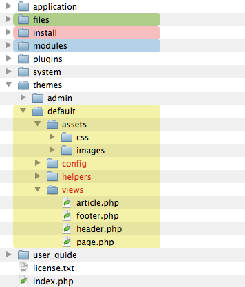

Create the Theme
A theme is a folder containing :
- Views used by the website,
- Assets used by the theme (CSS, javascript, design pictures),
- Helpers dedicated to the website (navigation helper for example),
- Static translations files,
- Optional widgets used by the website.

Important: The 3 folders in red (config, helpers, views) must be present in your theme folder.
Main Ionize Folders
During your website conception with Ionize, you will mainly use these folders. Know their role is a good introduction.| Folder | Usage | Can be renamed | Description |
|---|---|---|---|
| /files | All the website content medias | Yes | Medias add through Ionize are stored here. This folder can contains sub-folders, its organization depends on your wishes. |
| /install | Installer program | This folder MUST be deleted after installation | |
| /themes | Theme folder | No | Each subfolder of this folder is a theme. The admin subfolder is the Ionize panel theme. It must not be deleted. |
| /themes/default | Default theme files | Yes | This is a very basic theme used after a fresh install of Ionize. You can rename it or copy it to create your own theme. |
| /themes/default/config | Theme config files | No | Some of these files are written by Ionize |
| /themes/default/helpers | Your helpers files | No | This folder is optional. If you wish to replace some of the existing helpers or create yours, put them in this folder. |
| /themes/default/language | Translations files | No |
This folder is created by Ionize when you create static translations items. See Static Translations for more info. |
| /themes/default/views | Website views | No | Contains all the views of your website. |